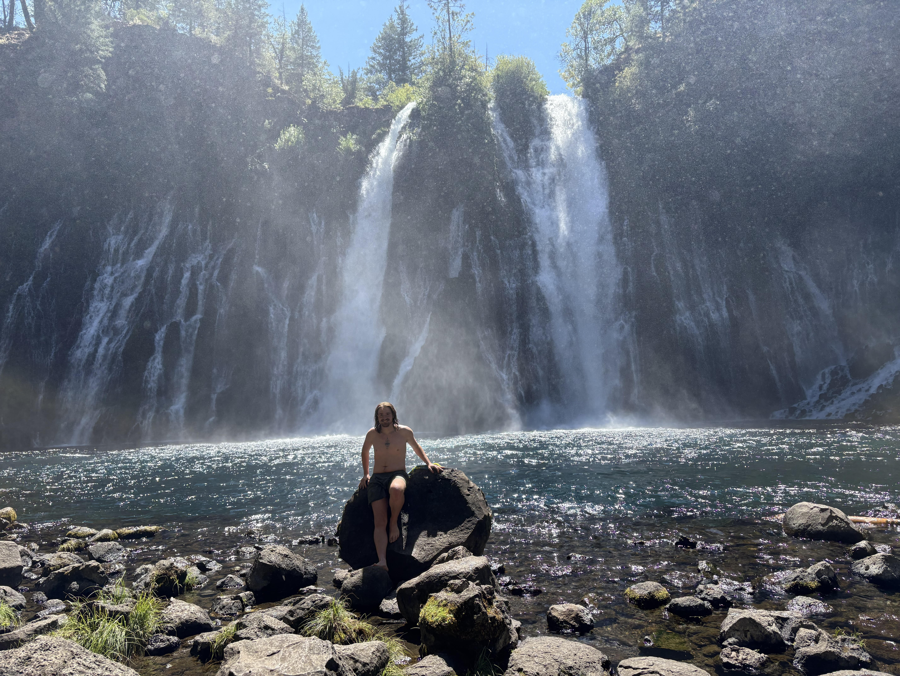

Lab 2: My first interactive map!
Road Trip 2025:
- Glacier National Park, MT
- Vashon Island, WA
- Mt. Rainier, WA
- Portland, OR
- Eureka, CA
- Burney Falls, CA
- Lassen Peak, CA
- Reno, NV
- Lake Tahoe, NV
- Bishop, CA
- Moab, UT
- Chihuahua Lake, CO
Burney Falls

Back to main page